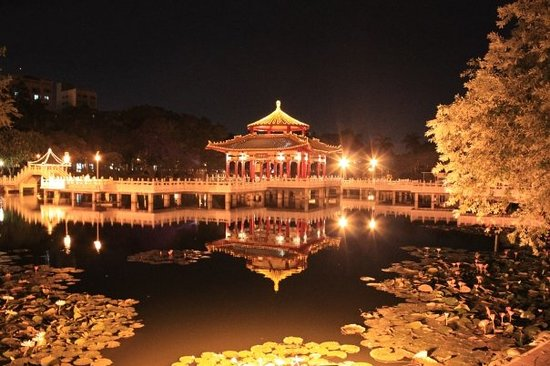
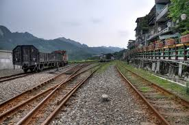

Latest Spot
Blue Tear
Hottest Spot
Taitung
Hot Rank |
||
| 1 | Blue Tear | |
| 2 | Taitung | |
| 3 | Taichung | |
| 4 | Taipei | |
| 5 | Hualian | |
Recommend
Taipei
Taipei, officially known as Taipei City, is the capital city and a special municipality of the Republic of China, commonly known as Taiwan. Sitting at the northern tip of the state, Taipei City is an enclave of the municipality of New Taipei City. It is about 25 km (16 mi) southwest of the northern port city Keelung. Most of the city is located on the Taipei Basin, an ancient lakebed bounded by the two relatively narrow valleys of the Keelung and Xindian rivers, which join to form the Tamsui River along the city's western border.
Tainan
Tainan is the oldest city in Taiwan and also commonly known as the "Capital City" for its over 200 years of history as the capital of Taiwan under Koxinga and later Qing dynasty rule. Tainan's complex history of comebacks, redefinitions and renewals inspired its popular nickname "the Phoenix City"
Yilan
Yilan International Children's Folklore and Folkgame Festival, “A dreamland for the children of Taiwan, a magnet for art from around the world, a garden of culture for the people of Ilan.” Seven years ago, these were the concepts that launched the first ICFFF, and over the years the people of Yilan have been making it happen step by step. Of all Taiwan’s folk festivals, the ICFFF is probably the best known internationally.